Тема 1. Ориентирование на местности
Занятие 1. Ориентирование на местности
Тема 2. Составление служебных графических документов.
Занятие 1. Понятие о служебных графических документах, их назначение и содержание.
Топографической картой называется уменьшенное, подробное и точное изображение небольшого участка местности на плоскости (бумаге).
Топографическая карта - основной графический документ о местности, содержащей точное, подробное и наглядное изображение местных предметов и рельефа.
Карты масштаба 1:10 000 (1:25 000) – самые подробные и точные, предназначены для детального изучения и оценки отдельных небольших участков местности командирами подразделений и частей при форсировании водных преград, высадке воздушных и морских десантов, ведении боевых действий в городах, строительстве инженерных сооружений. Они используется также для точных измерений и расчетов при планировании и выполнении мероприятий но инженерному оборудованию местности и топогеодезической подготовки стрельбы.
Карта масштаба 1:50000 предназначена для изучения и оценки местности, ориентирования, целеуказания и используется, как правило, подразделениями и частями в различных видах боя, особенно при организации обороны. В наступлении она используется для изучения и оценки местности при прорыве обороны противника, преодолении водных преград, высадке воздушных и морских десантов, а также при ведении боевых действий за населенные пункты. Эта карта используется также для топогеодезической подготовки стрельбы, проектирования военно-инженерных сооружений и выполнения расчетов по инженерному оборудованию местности.
Карта масштаба 1:100000 предназначена для изучения местности и оценки ее тактических свойств при планировании боя, организации взаимодействия и управлении войсками, ориентирования на местности и целеуказания, топогеодезической привязки элементов боевых порядков войск, определения координат объектов (целей) противника. Она также используется при проектировании военно-инженерных сооружений и выполнении мероприятий по инженерному оборудованию местности.
Карта масштаба 1:200000 предназначена для изучения и оценки местности. Она используется при планировании боевых действий войск и мероприятий по их обеспечению, управлении войсками. Карта широко используется в качестве дорожной, так как наглядно и достаточно полно отображает дорожную сеть и ее пригодность для передвижения боевой и другой техники. Кроме до-рожной сети на этой карте хорошо отображены общий характер рельефа, основные водные преграды, крупные лесные массивы и населенные пункты. Поэтому она используется для изучения проходимости местности вне дорог, се защитных и маскирующих свойств.
Карта масштаба 1:500000 предназначена для изучения и оценки общего характера местности при подготовке и ведении операций. Она используется при организации взаимодействия и управлении войсками, для ориентирования при передвижении войск и целеуказания, а также для нанесения общей боевой обстановки.
Карта масштаба 1:1000000 предназначена для общей оценки местности и изучения природных условий крупных географических районов, военно-географической оценки театров военных действий, управления войсками и решения других задач.
Система условных обозначений на картах
Условные знаки - это графические обозначения, показывающие положение какого-либо объекта на местности и передающие его качественную и количественную характеристику. В РФ и странах СНГ используется 465 условных знаков (в США - 243, во Франции - 288. в ФРГ - 231).
Группы однородных местных предметов изображаются на картах с помощью основного (базового) условного знака. Качественная и количественная характеристика объектов одной группы опреде-ляется с помощью усложнения базового условного знака.
Чем крупнее масштаб карты, тем больше объектов и с большими подробностями показывается на ней при изображении данной территории. С уменьшением масштаба карты сокращается информационная емкость изображения на ней различных объектов.
На топографических картах масштаба 1:25000 – 1:100000 показываются по возможности все топографические объекты и их характерные особенности, имеющие значение для войск. На картах масштабов 1:200000 и 1:500000 отображаются лишь наиболее существенные из них, причем со значительным обобщением их плановых очертаний и других показателей.
Условные знаки местных предметов делятся на три основные группы:
- масштабный;
- внемасштабные;
- пояснительные.
Система деления карты на отдельные листы называется разграфкой карты, а система обозначения (нумерации) листов — их номенклатурой.
Деление топографических карт на отдельные листы линиями меридианов и параллелей удобно тем, что рамки листов точно указывают положение на земном эллипсоиде участка местности, изображённого на данном листе, и его ориентировку относительно сторон горизонта.
Стандартные размеры листов карт различных масштабов указаны в таблице 1:
Таблица 1
|
Масштаб карты |
Размеры листа |
На местности соответствует |
||
|
по широте (мин.) |
по долготе (мин.) |
длине боковой рамки листа, км |
площади листа, кв. км |
|
|
1:25 000 |
5 |
7,5 |
9 |
75 |
|
1:50 000 |
10 |
15 |
18 |
300 |
|
1:100 000 |
20 |
30 |
37 |
1200 |
|
1:200 000 |
40 |
60 |
74 |
5000 |
|
1:500 000 |
120 |
180 |
220 |
44000 |
|
1:1 000 000 |
240 |
360 |
440 |
175000 |
Схема разграфки карты масштаба 1:1 000 000 показана на рис.1.
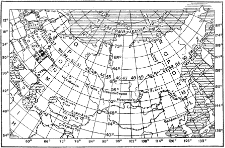
Рис.1. Разграфка и номенклатура листов карты масштаба 1:1 000 000.
Принцип разграфки карт остальных масштабов (более крупных) показан на рис.2,3.
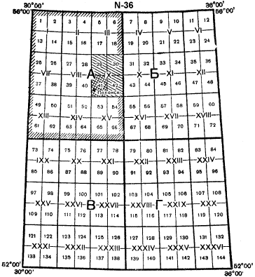
Рис.2. Расположение,
порядок нумерации и обозначения листов карт
масштабов 1:50 000 – 1:500 000 на листе миллионной
карты.
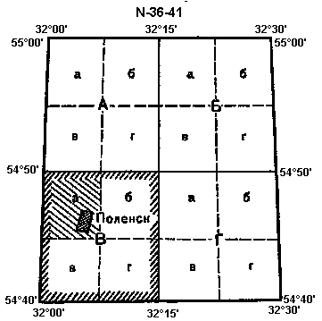
Рис.3. Разграфка и номенклатура листов карт масштаба 1:50 000 и 1:25 000.
Из таблицы 1 и этих рисунков видно, что листу миллионной карты соответствует целое число листов остальных масштабов, кратное четырём — 4 листа карты масштаба 1:500 000, 36 листов карты масштаба 1:200 000, 144 листа масштаба 1:100 000 и т.д.
В соответствии с этим установлена и номенклатура листов, единая для топографических карт всех масштабов. Номенклатура каждого листа указана над северной стороной его рамки.
В основу обозначения листов топографических карт любого масштаба положена номенклатура листов миллионной карты.
Ряды листов этой карты обозначаются заглавными буквами латинского алфавита (от А до V) и счёт их ведётся от экватора к полюсам. Колонны же листов нумеруются цифрами от 1 до 60. Счёт колонн ведётся от меридиана 180 градусов с запада на восток.
Номенклатура листа карты масштаба 1:1 000 000 слагается из указания ряда (буквы) и колонны (цифры), в пересечении которых он расположен, например, лист с г. Смоленск имеет номенклатуру N-36 (рис.1).
Колонны листов миллионной карты совпадают с шестиградусными координатными зонами, на которые разбивается поверхность земного эллипсоида при вычислении координат и составлении карт в проекции Гаусса. Различие заключается лишь в их нумерации: так как счёт координатных зон ведётся от нулевого (Гринвичского) меридиана, а счёт колонн листов миллионной карты от меридиана 180 градусов, то номер зоны отличается от номера колонны на 30. Поэтому, зная номенклатуру листа карты, легко определить, к какой зоне он относится. Например, лист М-35 расположен в 5-й зоне (35-30), а лист К-29 — в 59-й зоне (29+30).
Номенклатура листов карт масштабов 1:100 000 – 1:500 000 слагается из номенклатуры соответствующего листа миллионной карты с добавлением к ней цифры (цифр) или буквы, указывающей расположение на нём данного листа.
Как видно из рис.2, счёт листов всех масштабов ведётся слева направо и сверху вниз, при этом:
— листы масштаба 1:500 000 (4 листа) обозначаются русскими прописными буквами А, Б, В, Г. Следовательно, если номенклатура листа миллионной карты будет, например, N-36, то лист масштаба 1:500 000 с г. Поленск имеет номенклатуру N-36-А (рис.2);
— листы масштаба 1:200 000 (36 листов) обозначаются римскими цифрами от I до ХХХVI. Таким образом, номенклатура листа с г. Поленск будет N-36-IХ;
— листы масштаба 1:100 000 нумеруются цифрами от 1 до 144. Например, лист с г. Поленск имеет номенклатуру N-36-41.
Листу карты масштаба 1:100 000 соответствуют 4 листа масштаба 1:50 000, обозначаемые русскими прописными буквами “А, Б, В, Г”, а листу масштаба 1:50 000 — 4 листа карты 1:25 000, которые обозначаются строчными буквами русского алфавита “а, б, в, г” (рис.3).
В соответствии с этим номенклатура листов карты 1:50 000 слагается из номенклатуры листа масштаба 1:100 000, а листов карты 1:25 000 — из номенклатуры листа масштаба 1:50 000 с присоединением к ней буквы, указывающей данный лист. Например, N-36-41-В обозначает лист масштаба 1:50 000, а N-36-41-В-а — лист масштаба 1:25 000 с г. Поленск (рис.3).
Правила и порядок образования топографических карт всех масштабов приведены в таблице 2:
Таблица 2
|
Виды карт |
Масштаб карты |
Типы карт |
Порядок образования листа карты |
Схема образования листа карты |
Размер листа карты |
Пример |
|
Оперативные |
1:1000000 |
Мелкомасштабные |
деление земного эллипсоида параллелями, меридианами |
6° 4° |
4° × 6° |
С-3 |
|
1:500000 |
деление листа миллионной карты на 4 части |
А Б В Г |
2° × 3° |
С-3-Б |
||
|
1:200000 |
Среднемасштабные |
деление листа миллионной карты на 36 частей |
XVI |
40’ × 1° |
С-3-XVI |
|
|
Тактические |
1:100000 |
деление листа миллионной карты на 144 части |
56 |
20’ × 30’ |
С-3-56 |
|
|
1:50 000 |
Крупномасштабные |
деление листа карты |
А Б В Г |
10’ × 15’ |
С-3-56-А |
|
|
1:25 000 |
деление листа карты |
а б в г |
5’ × 7’ 30” |
С-3-56-А-б |
||
|
1:10 000 |
деление листа карты |
1 2 3 4 |
2’ 30” × 3’ 45” |
С-3-56-А-б-4 |
Для подбора нужных листов карт на тот или иной район и для быстрого определения их номенклатуры существуют так называемые сборные таблицы карт (рис.4). Они представляют собой мелкомасштабные схемы, разделённые меридианами и параллелями на клетки, соответствующие обычным листам карты масштаба 1:100 000, с указанием их порядковой нумерации в пределах листов миллионной карты.
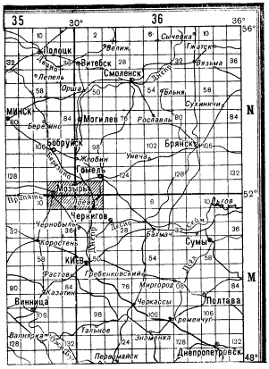
Рис.4 Вырезка из сборной таблицы карты масштаба 1:100 000.
Выписка номенклатуры нужных листов проводится слева направо и сверху вниз. Например, если требуется получить карты масштабов 1:100 000 и 1:50 000, допустим, на район Мозырь-Лоев (на рис.4 этот район заштрихован), то перечень номенклатур этих листов в заявке на карты будет выглядеть следующим образом:
|
1:100 000 |
1:50 000 |
|
N-35- 143, 144; |
N-35-143-А, Б, В, Г; М-35- 11-А, Б, В, Г; |
|
N-36- 133, 134; |
N-35-144-А, Б, В, Г; M-35- 12-А, Б, В, Г; |
|
M-35- 11, 12; |
N-36-133-A, Б, В, Г; M-36- 1-А, Б, В, Г; |
|
M-36- 1, 2; |
N-36-134-А, Б, В, Г; M-36- 2-А, Б, В, Г. |
2.1. Сущность ориентирования на местности.
Ориентироваться на местности - это значит определить свое местоположение и направления на стороны горизонта относительно окружающих местных предметов и форм рельефа, найти указанное направление движения и точно выдержать его в пути. При ориентировании в боевой обстановке определяют также местоположение подразделения относительно своих войск и войск противника, расположение ориентиров, направление и глубину действий.
Сущность ориентирования составляет три основных элемента:
Важнейшая задача ориентирования - нахождение и выдерживание заданного направления движения в любых условиях обстановки: в ходе боя, в разведке, при совершении марша.
Все действия командира подразделения неизбежно связаны с ориентированием на местности. Без ориентирования немыслимы постановка боевых задач подразделениям и огневым средствам, целеуказание, нанесение на карту результатов разведки противника и местности и управление подразделениями в ходе боя.
В основе ориентирования лежит умение выбирать на местности ориентиры и использовать их как маяки, указывающие нужные направления, пункты и рубежи.
Изучение и запоминание незнакомого участка местности следует всегда начинать с выбора трех-четырех наиболее приметных ориентиров. Надо хорошо запомнить их внешний вид и взаимное положение, чтобы в дальнейшем можно было по ним в любом пункте опознать местность и определить свое местоположение. При передвижении ориентиры выбирают по направлению пути, последовательно намечая их по мере выхода в новые районы.
2.2. Способы ориентирования на местности.
Способы ориентирования – это способы использования различных приемов техники ориентирования на местности и различных технических средств и местных предметов.
Ориентироваться на местности можно различными способами:
Командиры подразделений ориентируются преимущественно по карте. По ней они определяют свое местонахождение, опознают окружающие местные предметы и элементы рельефа и устанавливают местоположение наблюдаемых целей и других объектов.
Солдатам и сержантам ориентироваться приходится главным образом по ориентирам и с помощью компаса. Для выхода в нужный пункт командир указывает им азимут направления движения и ориентиры по маршруту движения. Эти данные командир подразделения готовит обычно по карте.
2.3. Ориентиры. Выбор и использование ориентиров.
Ориентирами называются все местные предметы и формы рельефа, относительно которых определяют свое местоположение, положение целей (объектов) и указывают направление движения.
Ориентиры обычно выделяются среди других местных предметов своими размерами, формой, окраской и легко опознаются при обзоре окружающей местности.
Ориентиры подразделяются на площадные, линейные и точечные.
К площадным ориентирам относятся населенные пункты, отдельные массивы леса, рощи, озера, болота и другие объекты, занимающие большие площади. Такие ориентиры легко опознаются и запоминаются при изучении местности.
Линейные ориентиры - это местные предметы и формы рельефа, имеющие большую протяженность при сравнительно небольшой их ширине, например дороги, реки, каналы, линии электропередач, узкие лощины и т. п. Они используются, как правило, для выдерживания направления движения.
К точечным ориентирам относятся трубы заводов и фабрик, постройки башенного типа, ретрансляторы, перекрестки дорог, путепроводы, пики горных вершин, ямы и другие местные предметы, занимающие небольшую площадь. Эти ориентиры используются обычно для точного определения своего местоположения, положения целей, указания секторов огня, полос наблюдения.
Выбор и использование ориентиров.
Уверенное ориентирование на местности во многом зависит от правильного выбора ориентиров. Так, для выдерживания направления движения днем выбирают ориентиры, которые могут быть легко опознаны еще при подходе к ним, например постройки башенного типа, отдельные деревья, т. е. точечные ориентиры. Однако ночью такие ориентиры слабо различаются издали, поэтому при ограниченной видимости используются в основном линейные и площадные ориентиры. Таким образом, при выборе ориентиров необходимо всегда учитывать условия, в которых подразделение будет действовать на местности.
В боевой обстановке наряду с определением своего местоположения и направления движения ориентиры используются для целеуказания, управления подразделением и огнем в бою. Они назначаются старшим начальником. В необходимых случаях командиры подразделений выбирают дополнительные ориентиры. В качестве ориентиров в этом случае выбираются наиболее устойчивые местные предметы и формы рельефа, например высоты, насыпи, развилки дорог и т. п., которые могут сохраниться на поле боя.
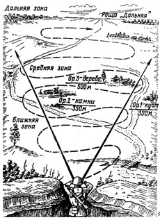 |
Ориентиры выбираются по возможности равномерно по фронту и глубине, чтобы обеспечить быстрое и точное указание местоположения цели. Выбранные ориентиры нумеруются справа налево и по рубежам от себя в сторону противника. |
2.4. Целеуказание от ориентиров.
Умение быстро и правильно указывать цели, ориентиры и другие объекты на местности имеет важное значение для управления подразделением и огнем в бою. Целеуказание может производиться как непосредственно на местности, так и по карте или аэроснимку.
При целеуказании соблюдаются следующие основные требования: местоположение целей указывать быстро, кратко, ясно и точно; цели указывать в строго установленном порядке, пользуясь принятыми единицами измерения; передающий и принимающий должны иметь общие ориентиры и твердо знать их расположение, иметь единое кодирование местности.
Целеуказание на местности осуществляется от ориентира или по азимуту и дальности до цели, а также наведением оружия в цель.
Целеуказание от ориентира - наиболее распространенный способ целеуказания. При этом способе целеуказания вначале называют ближайший к цели ориентир, затем угол между направлением на ориентир и направлением на цель в тысячных и удаление цели от ориентира в метрах. Например: «Ориентир два, вправо сорок пять, дальше сто, у отдельного дерева - наблюдатель».
Если передающий и принимающий цель имеют приборы наблюдения, то вместо удаления цели от ориентира может указываться вертикальный угол между ориентиром и целью в тысячных. Например: «Ориентир четыре, влево тридцать, ниже десять - боевая машина в окопе».
В некоторых случаях, особенно при выдаче целеуказания по малозаметным целям, используются местные предметы, находящиеся вблизи цели. Например: «Ориентир два, вправо тридцать - отдельное дерево, дальше двести - развалины, влево двадцать, под кустом - пулемет».
Для отыскания направления по сторонам света вначале определяют направление север-юг; после чего, став лицом к северу, определяющий будет иметь направо - восток, налево - запад. Стороны света обыкновенно находят по компасу, а при отсутствии его - по Солнцу, Луне, звездам и по некоторым признакам местных предметов.
3.1 Определение направлений на стороны горизонта по компасу.
При помощи компаса наиболее удобно и быстро можно определить север, юг, запад и восток.
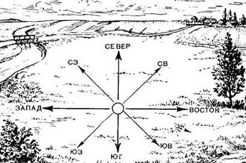 Взаимное положение сторон горизонта |
При работе с компасом следует всегда помнить, что сильные электромагнитные поля или близко расположенные металлические предметы отклоняют стрелку от правильного ее положения. Поэтому при определении направлений по компасу необходимо отходить на 40- 50 м от линий электропередач, железнодорожного полотна, боевых машин и других крупных металлических предметов. |
Затем отпускают тормоз магнитной стрелки и поворачивают компас так, чтобы северный ее конец совпал с нулевым отсчетом. После этого, не меняя положения компаса, визированием через целик и мушку замечают удаленный ориентир, который и используется для указания направления на север.
Направления на стороны горизонта взаимосвязаны между собой, и, если известно хотя бы одно из них, можно определить остальные. В противоположном направлении по отношению к северу будет юг, справа-восток, а слева - запад.
3.2 Определение направлений на стороны горизонта по небесным светилам.
При отсутствии компаса или в районах магнитных аномалий, где компас может дать ошибочные показания (отсчеты), стороны горизонта можно определить по небесным светилам: днем - по Солнцу, а ночью - по Полярной звезде или Луне.
Определение направлений на стороны горизонта по Солнцу.
в северном полушарии места восхода и захода Солнца по временам года следующее:
Солнце примерно находится в 7.00 на востоке, в 13.00 - на юге, в 19.00 - на западе. Положение Солнца в эти часы и укажет соответственно направления на восток, юг и запад.
Самая короткая тень от местных предметов бывает в 13 часов, и направление тени от вертикально расположенных местных предметов в это время будет указывать на север.
Для более точного определения сторон горизонта по Солнцу используются наручные часы.
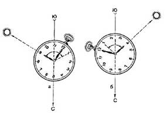 Определение сторон горизонта по Солнцу и часам. а – до 13 часов; б – после 13 часов. 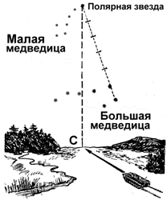 Определение сторон горизонта по Полярной звезде |
Определение направлений на стороны горизонта по Солнцу и часам. |
западе, в последнюю четверть в 1 час ночи - на востоке, в 7 часов утра - на юге.
При полнолунии ночью стороны горизонта определяются так же, как по Солнцу и часам, причем Луна принимается за Солнце.
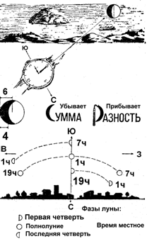 Определение сторон горизонта по луне и часам. |
3.3 Определение направлений на стороны горизонта по признакам местных предметов. |
Определение направлений на стороны горизонта по тени.
В полдень направление тени (она будет самая короткая) указывает на север.
Не дожидаясь самой короткой тени можно ориентироваться следующим способом. Воткнуть в землю палку около 1 метра длиной. Отметить конец тени. Подождать 10-15 минут и повторить процедуру. Затем провести линию от первой позиции тени до второй и продлить ее на шаг дальше второй отметки. Стать носком левой ноги напротив первой отметки, а правой - в конце линии, которую начертили. В этом положении вы будете лицом обращены на север.
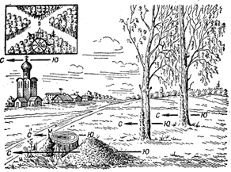 Определение сторон горизонта по признакам местных предметов. |
Определение направлений на стороны горизонта по местным предметам |
В больших массивах культурного леса определить стороны горизонта можно по просекам, которые, как правило, прорубаются строго по линиям север-юг и восток-запад, а также по надписям номеров кварталов на столбах, установленных на пересечениях просек.
На каждом таком столбе в верхней его части и на каждой из четырех граней проставляются цифры - нумерация противолежащих кварталов леса; ребро между двумя гранями с наименьшими цифрами показывает направление на север (нумерация кварталов лесных массивов в СНГ идет с запада на восток и далее на юг).
Определение направлений на стороны горизонта по постройкам
К постройкам, которые довольно строго ориентированы по сторонам горизонта, относятся церкви, мечети, синагоги.
Алтари и часовни христианских и лютеранских церквей обращены на восток, колокольни на запад. Опущенный край нижней перекладины креста на куполе православной церкви обращен к югу, приподнятый - к северу. Алтари католических костелов располагаются на западной стороне.
Двери еврейских синагог и мусульманских мечетей обращены примерно на север, их противоположные стороны направлены: мечетей - на Мекку в Аравии, лежащую на меридиане Воронежа, а синагог - на Иерусалим в Палестине, лежащий на меридиане Днепропетровска.
Кумирни, пагоды, буддийские монастыри фасадами обращены на юг.
Выход из юрт обычно делают на юг.
В домах сельской местности больше окон в жилых помещениях прорубается с южной стороны, а краска на стенах строений с южной стороны выцветает больше и имеет жухлый цвет.
Служебными (боевыми) графическими документами называют документы, отработанные графически на карте или схеме.
По назначению они подразделяются на документы по управлению войсками, отчетно-информационные и справочные.
Основные требования к боевым графическим документам: достоверность, точность, наглядность, своевременность разработки, краткость и ясность.
Наглядность достигается нанесением на документ лишь тех данных, которые требуются поставленной задачей, применением общепринятых топографических и тактических условных знаков, правильным и четким вычерчиванием, а также выбором масштаба топографической основы и размеров условных знаков и подписей,
В зависимости от используемой топографической основы различают карты, схемы и карточки.
Рабочая карта - один из важнейших боевых графических документов, с помощью которого командиры выполняют свои обязанности по планированию боевых действий и, управлению войсками в ходе боевых действий.
К этой же группе боевых графических документов относятся также карты обстановки и разведывательные карты, которые выполняются на обычных топографических и бланковых картах путем нанесения, или впечатывания данных о противнике и местности. Бланковыми картами называют копии обычных топографических карт, издаваемых в том же или увеличенном масштабе, чаще в одну, а иногда в две-три краски бледного тона. Их используют в штабах как бланки для нанесения или впечатывания необходимых данных обстановки.
К схемам относят графические документы, топографической основой которых является изображение местности, составленное обычно по карте или аэроснимкам. Схемы составляют, как правило, на кальке (восковке). С карты переносят на схему только те топографические объекты, которые необходимы для конкретной тактической обстановки. В случае необходимости такие схемы уточняют или дополняют непосредственно на местности.
Схему обычно ориентируют так же, как и карту (север – снизу, юг - сверху). Если же ориентировка схемы по сравнению с картой изменена, то в свободной части чертежа помещают стрелку север-юг. В этом случае все надписи наносят параллельно нижней стороне схемы. Для привязки графического документа к карте на углах схемы делают перекрестия километровых линий с обозначением подписей километров. Наверху, подписывают номенклатуру листа карты, по которой составлялась схема, а внизу помещают масштаб.
Карачки - это простейшие чертежи небольших участков местности, выполненные в поле с одной или двух точек стояния без точного соблюдения масштаба. Расстояния на чертеже откладывают на глаз, добиваясь правильного взаимного расположения объектов местности.
Содержание и степень подробности карточек, как и других боевых графических документов, определяются их назначением. На одних карточках детально показывают разведывательные данные о противнике (карточка-донесение), на других - различные типографические элементы местности например, карточка проходов через завалы, карточка брода и др.). Некоторые из карточек иногда называют схемами, например. «Схема ориентиров».
В современных условиях, организуя боевые действия подразделений и руководя ими в ходе боя, командир не может ограничиться работой на местности без применения карты.
Карта с оперативной (боевой) обстановкой, используемая командиром (начальником) в процессе управления войсками (силами), называется его рабочей картой.
Рабочая карта представляет собой один из основных боевых документов, а очень часто и единственный боевой документ, с помощью которого командиры осуществляют управление войсками в бою.
Каждый командир должен работать всегда на подготовленной карте, что дает возможность решать задачи с помощью рабочей карты с наименьшей затратой времени.
Правильно подготовленная рабочая карта намного облегчает пользование ею в боевой обстановке и, главное, сокращает время для решения задач по руководству подразделениями. К этому необходимо добавить, что подготовленной картой можно пользоваться более продолжительное время, чем неподготовленной.
Подготовка карты слагается из выбора, оценки, оклеивания, складывания и подъема карты.
Выбор карты. В качестве рабочей карты командира могут использоваться карты масштаба 1:25000, 1:50000 и 1:100000. Выбор масштаба карты зависит от предстоящих боевых действий, характера и содержания боевых задач, возлагаемых на то или иное подразделение. Поэтому прежде чем выбрать масштаб рабочей карты, командир должен изучить и уценить район предстоящих боевых действий своего подразделения.
Наиболее подробной и точной картой является топографическая карта масштаба 1:25000. Поэтому ее целесообразно применять для детальных расчетов. Чаще всего такая карта используется как рабочая карта командиров взводов, рот, батарей при прорыве обороны противника, при воздушном десантировании и форсировании водных преград, а также при действиях в крупных населенных пунктах.
Карта масштаба 1:50000 обеспечивает решение тех же задач, чти и карта масштаба 1:25000, но с меньшей точностью. Точность карты масштаба 1:50000 (30-50 м наL местности), позволяет ее широко использовать в качестве рабочей карты командиров батальонов (дивизионов).
Карта масштаба 1:100000 широко используется как рабочая карта в подвижных формах боя: при совершении маршей, при перегруппировках, во встречном бою, при разведке маршрутов для боевой работы, На этой карте имеются те же топографические сведения, что и на карте масштаба 1:25000 или 1:50000, но с меньшей подробностью. Допускаемая ошибка при измерении расстояния, составляет 35-50 м, однако эта ошибка не препятствует использованию этой карты в качестве рабочей карты командирами подразделений (частей).
Оценка карты (ознакомление с картой), Выбрав необходимый для рабочей карты масштаб, командир приступает к всесторонней оценке выбранной карты. Оценка карты заключается в изучении каждого листа карты. При этом уточнятся масштаб и год съемки или рекогносцировки, год издания, система координатной сетки и поправка направления.
Кроме того, изучаются чисто топографические характеристики листов карты: высота сечения, предельная крутизна оката, заложение и поправка направления.
Изучение выбранного масштаба карты имеет целью выработать у командира определенное чувство масштабности, которое необходимо в практической работе при нанесении обстановки на карту, так как боевая, обстановка, наносимая с помощью условных знаков на карту, должна соответствовать действительному расположении войск на местности.
Изучая масштаб карты, командир мысленно откладывает отрезки величиной 0,5, 1, 2 см и т.д. Это помогает быстро и точно наносить на карту положение различных тактических элементов. Сказанное совсем не означает, что при нанесении того или иного тактического знака нужно до миллиметра измерять его величину, такие элементы наносятся на карту внемасштабными условными знаками.
Уяснив год съемки и год издания, командир определяет свое отношение к точности и полноте нанесенной на нее топографической основы. Карта более поздней съемки новейшего издания точнее и вернее представляет местность, на которой предстоит действовать подразделению. Однако часто приходится пользоваться картой относительно старого издания. В этом случае необходимо обращать внимание на данные, свидетельствующие о времени рекогносцировки (изменения) карты. Это означает, что карта в значительной степени дополнена более новыми данными по сравнению с теми, какие имелись в год ее издания.
Масштаб и год издания карты необходимо уяснить и для записи на всех документах, разрабатываемых с помощью рабочей карты (донесениях, распоряжениях, приказах).
Оценка чисто топографических характеристик карты (сетки координат, высот сечения, крутизны скатов, заложения, поправки направления) необходима командиру для правильного движения подразделений по местности, целеуказания, ориентирования, решения огневых задач, определения условий наблюдения, проходимости местности в целях осуществления маневра силами и средствами в бою.
Склеивание карты. Очень часто районы, боевых действий подразделений будут выходить за пределы одного листа карты. В этих случаях рабочая карта командира может состоять из нескольких листов. Для удобства пользования выбранными листами карт производится предварительное их склеивание, т.е. нужные листы подклеиваются друг к другу. Очень важно правильно расположить и склеивать выбранные листы. Нужно помнить, что если рабочая карта будет склеена из большого числа листов, то рекомендуется перед склеиванием составить схему расположения листов.
Прежде чем приступить к склеиванию, нужно выполнить определенную подготовительную работу. Вначале необходимо правильно срезать края листа карты, но вместе с краями карты не должна срезаться часть самой карты. Для срезки краев карты следует пользоваться острим ножом или лезвием бритвы. Практика показывает, что при пользовании ножницам на срезку краев уходит больше времени и края получаются неровными.
Срезать края листа карты следует в определенном порядке, который обусловливается удобством работы на ней, а также самим процессом склеивания. Срезать края карты следует: в первом ряду склейки - восточные (кроме листов крайней правой колонны) и южные края (за исключенном нижнего ряда) (ряс. 1, а).
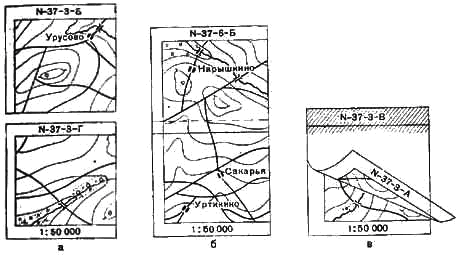
Рис. 1. Подготовка карты к склеиванию: а – обрезание карты; б – склеивание листов в колонны; в – порядок склеивания
Вначале склеивают листы по колоннам или рядам в том направлении, где полоса получится короче, затем склеивают между собой ряды или колонны. Склейку листов в колоннах начинают снизу, а в рядах - справа. При склеивании карты кладут обрезанный лист оборотной стороной на смежный необрезанный лист и, сблизив их по линии склейки, наносят кистью на полосу склейки тонкий равномерный слой клея.
Иногда из-за деформации бумаги один лист (в пределах рамки) бывает несколько длиннее или короче другого. Для выравнивания рамок следует смазать короткий лист, так как смазанный влажный лист можно несколько растянуть и подогнать к смежному листу. Затем перевертывают верхний лист и совмещают рамки листов, километровые линии и соответствующие контуры. Место склейки протирают сухой тряпкой, делая движение поперек линии склейки в сторону обреза.
при склеивании длинных полос (рядов или колонн) рекомендуется полосу с обрезанным краем свернуть в рулон, нанести на ее край слой клея, затем, разматывая постепенно рулон, совмещать и проглаживать склеиваемые полосы.
Складывание карты. Ничто не оказывается так отрицательно на пользование рабочей картой в боевой обстановке, как небрежное ее складывание.
Правильное складывание рабочей карты обеспечивает:
- удобное размещение карты в планшете, полевой сумке;
- пользование картой без полного ее развертывания;
- быстрое нахождение на карте требуемого района;
- сохранение карты от преждевременного износа.
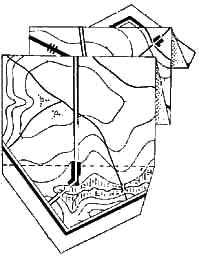Рис. 2. Порядок складывания карты
Форма сложенной рабочей карты может быть различной (рис. 2). Это зависит от масштаба карты, а также от того, в каких условиях она будет использована. Для занятий, проводимых в классе, сложенная рабочая карта должна соответствовать размерам и форме классного стола. Во время работы на местности, целесообразно, чтобы рабочая карта была сложена в соответствии с формой и размерами планшета или полевой сумки.
Рабочая карта при нахождении в бронетранспортере, танке, автомашине, оборудованных в качестве подвижных пунктов управления командиров подразделений, должна, быть сложена по форме и размерам специально оборудованного рабочего места.
На форму складывания рабочей карты влияет также характер выполнения предстоящей задачи. Так, например, если предстоит совершить марш, форма сложенной карты будет отличаться от формы карты, на которой показан район охраны и обороны.
Рабочую карту не следует складывать по линии склейки, так как сразу же произойдет разрыв карты в местах склейки. Плотное складывание карты обеспечивает лучшие условия для работы на ней.
Правильно сложенная карта обеспечивает длительную ее сохранность и пригодность для работы в любых условиях обстановки и является одним из показателей хорошей полевой выучки командира.